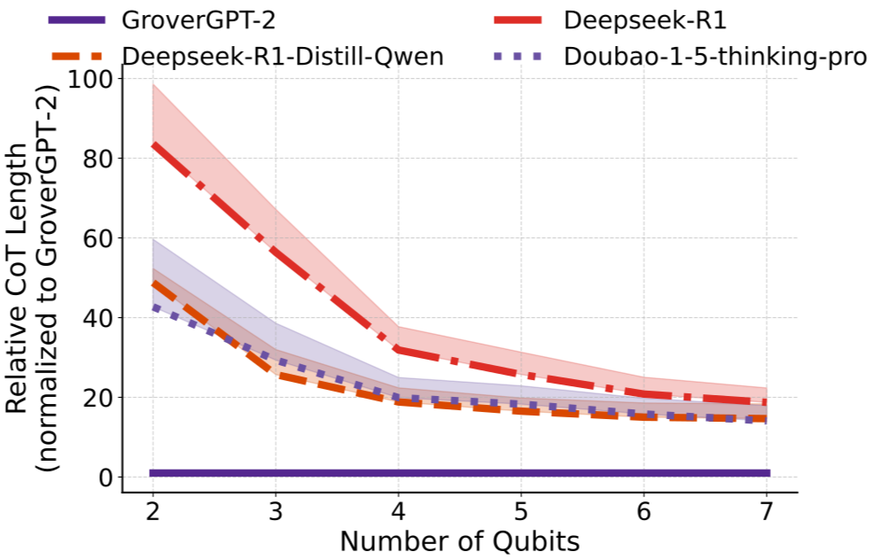

GroverGPT: When AI Learns To Think Like a Quantum Computer
Quantum computing has always felt like science fiction—until now. And what if I told you that a language model, the same kind of AI that writes stories or answers homework questions, just learned how to simulate a real quantum algorithm? Meet GroverGPT—an artificial intelligence trained not just to process words, but to mimic one of the most famous quantum algorithms: Grover’s Search.
Grover’s algorithm is a quantum method that finds a solution in about √N steps instead of N, a quadratic speedup. So for a database of 1,000,000 items, a quantum computer could find the target in roughly 1,000 tries. That’s the magic of interference and amplitude amplification—a uniquely quantum behavior. But GroverGPT doesn’t use qubits. It’s a classical AI model with 8 billion parameters, trained using huge datasets of quantum circuits, QASM code, and natural-language explanations.
Instead of computing quantum states directly (which is exponentially hard), GroverGPT learns patterns in quantum search outputs. For example, in a 3-qubit system (8 possibilities), GroverGPT learns that the correct answer should have a probability close to 1, and the rest close to 0. It outputs probabilities that sum to 1—just like quantum measurement results. Even better, it achieved nearly 100% accuracy on small systems and over 95% accuracy on much larger systems (like 20 qubits!).
What’s more exciting is how well GroverGPT generalizes. It was trained on small problems—3 to 6 qubits—but when tested on 20-qubit systems (over 1 million possible states), it still performed incredibly well. This shows it didn’t just memorize answers; it learned the deep structure behind quantum searching.
But did it learn the real quantum process or just a classical approximation? The researchers measured this using “infidelity”—a way to compare predicted and true quantum outputs. GroverGPT’s infidelity was almost zero in many cases, showing it actually captures the interference patterns of quantum states. It doesn’t just guess—it behaves like a quantum system would.
Interestingly, how the AI was prompted mattered a lot. When the input included QASM code (a kind of quantum assembly language) and was framed as a conversation (“Here is the circuit, what are the output probabilities?”), GroverGPT’s performance shot up. With the right prompt, accuracy improved by more than 15% in some cases!
Even better, the model was robust. Whether they tweaked the batch size or changed the learning rate slightly, GroverGPT still held its ground. And with more diverse training data—circuits using different numbers of qubits—it became even more stable and reliable.
Why This Matters
GroverGPT shows us something amazing: a classical AI can learn to behave like a quantum computer, at least for specific tasks like Grover’s search. That means we might be able to explore quantum computing concepts even without access to real quantum machines. It also proves how powerful task-specific AI models can be—they can even outperform general models like GPT-4 on focused problems.
As a physics student, I find this intersection of AI and quantum computing truly inspiring. GroverGPT gives us a glimpse into a future where learning quantum algorithms could be as accessible as chatting with an AI. The quantum world just got a little closer.
← Back to This Year’s Articles